Discover how hidden costs affect university students in Uganda and why student support systems are essential for education success.
Read more: THE PRICE OF STUDYING: THE HIDDEN COSTS OF UNIVERSITY LIFE IN UGANDA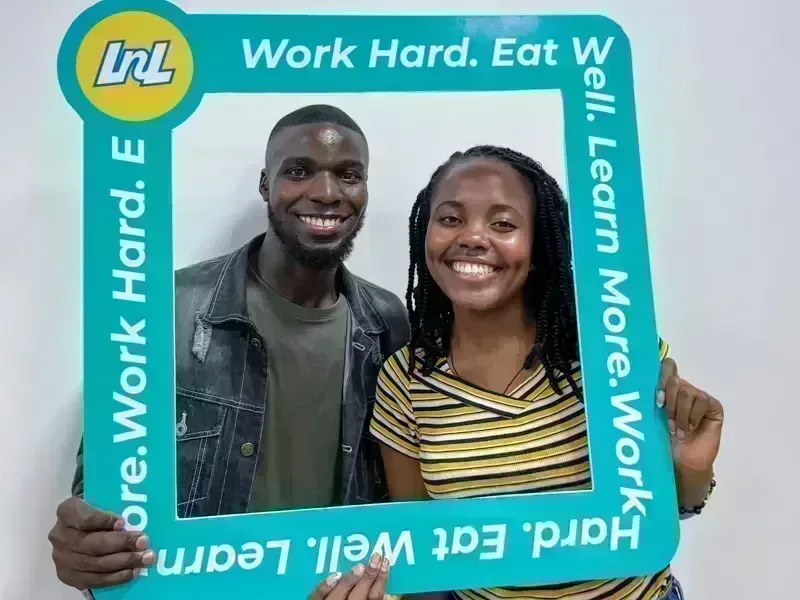
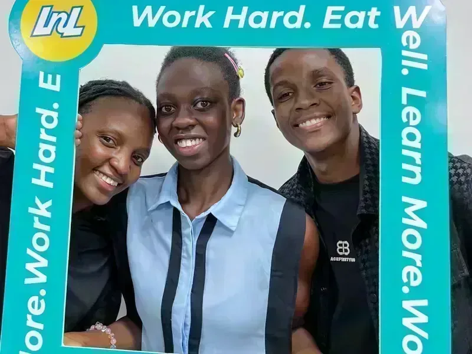

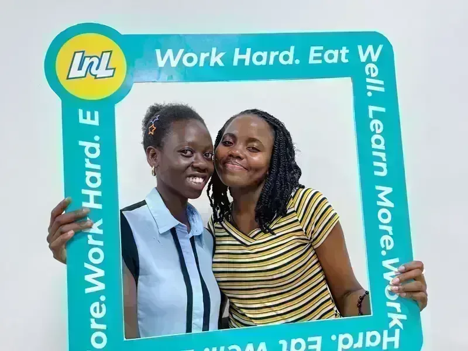
Food security is a foundation for learning, wellbeing, and opportunity. Learn And Lunch advocates for a future without campus hunger and builds practical solutions through research, student networks, and partnerships to ensure every university student has the opportunity to succeed.

Learn And Lunch is a student-led organization advancing food security as a foundation for student success in Ugandan universities. Through research, advocacy, student networks, and practical solutions, we work with universities, student leaders, and partners to understand campus food insecurity, influence systems change, and build approaches that ensure students have the opportunity to thrive.
Learn More about Learn N' Lunch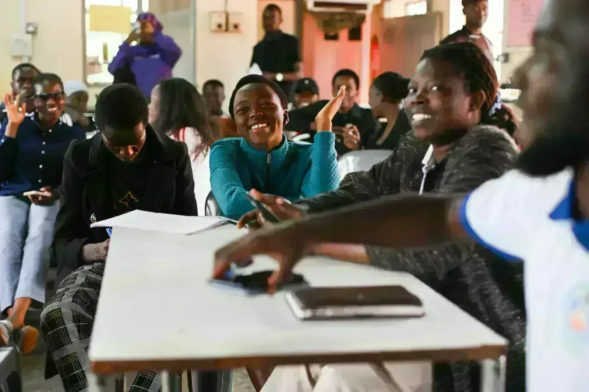
We generate evidence on student food insecurity across universities to understand the realities students face, identify systemic gaps, and guide effective solutions, policies, and institutional action
We connect students, associations, and campus leaders to build a national movement that amplifies student voices, strengthens advocacy, and advances food security as a priority within higher education.
We design, test, and improve practical interventions that address campus hunger, from food access models and nutrition initiatives to student-led solutions that can be adapted and scaled.
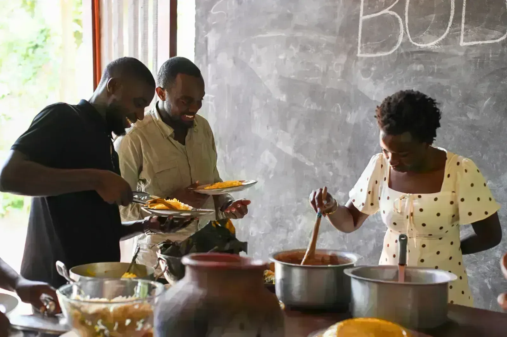
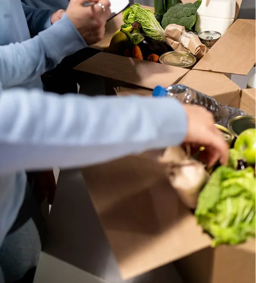
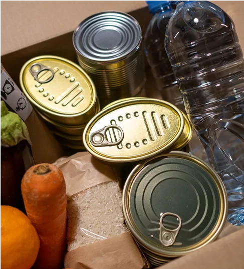
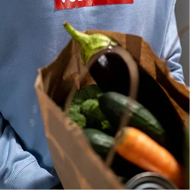
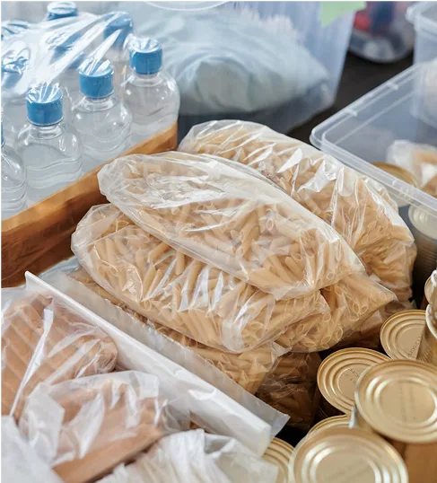
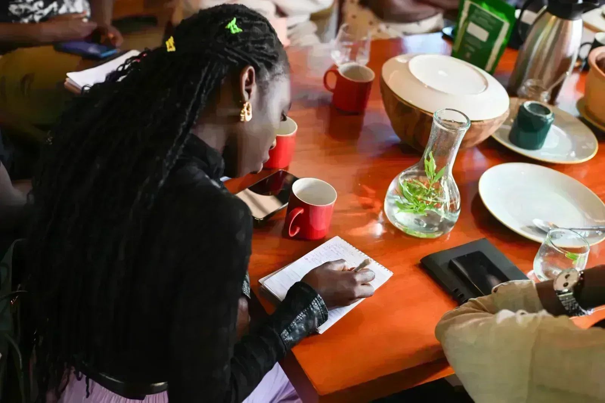
Across campuses, students are speaking about the realities of food insecurity and the solutions they want to see. These stories help bring visibility to an issue that has remained invisible.
Discover how hidden costs affect university students in Uganda and why student support systems are essential for education success.
Read more: THE PRICE OF STUDYING: THE HIDDEN COSTS OF UNIVERSITY LIFE IN UGANDA
Food insecurity affects students differently. Learn why a gender lens is essential for creating inclusive food security solutions in Uganda’s universities.
Read more: Food Security Through a Gender Lens: Building Inclusive Universities in Uganda
Discover why food security in universities is essential for student success in Uganda. Learn how Learn And Lunch is tackling campus hunger through research, advocacy, and student-led solutions.
Read more: Food Security in Universities: A Fundamental Pillar for Student Success in Uganda
On March 28, 2026, Learn N' Lunch visited Body and Soil Africa in Mityana to explore a partnership tackling campus hunger — not through temporary food relief, but by empowering students with the knowledge and skills to become active participants in sustainable food systems
Read more: There Is No Revolution Without Education: Learn N' Lunch Partners with Body and Soil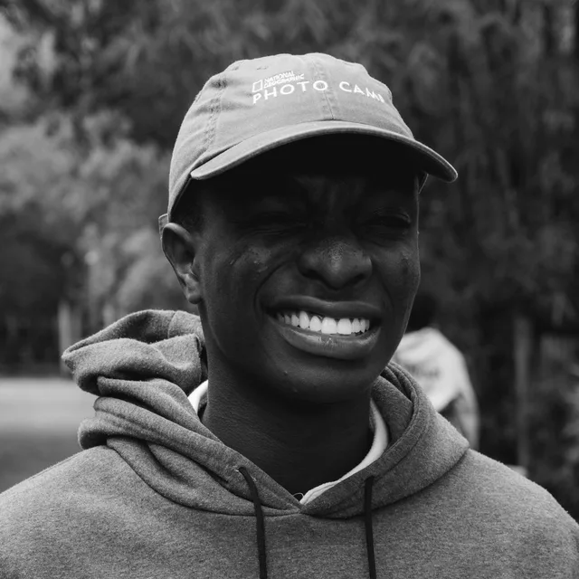
We work with campus communities, student networks, and organisations building practical pathways to end campus hunger.